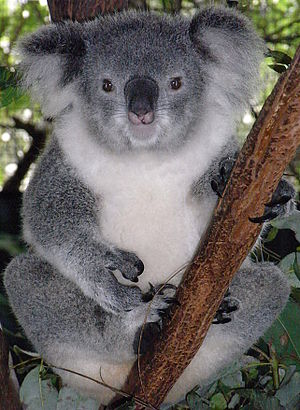

 코알라는 오스트레일리아 원주민의 언어인 다루크어로 "물을 먹지 않는다"라는 의미를 가진 굴라(gula)에서 비롯된 이름이다. 유럽에서 건너간 초기 이주민들은 코알라를 토종곰, 코알라곰 등으로 불렀으나 생물학적으로 코알라는 곰과는 아무런 연관이 없다. 그러나 초기 이주민의 선입견은 코알라의 학명에도 영향을 끼쳤다. 코알라의 학명 Phascolarctos는 주머니달린(그리스어: phaskolos) 곰(그리스어: arctos)이란 뜻이다.